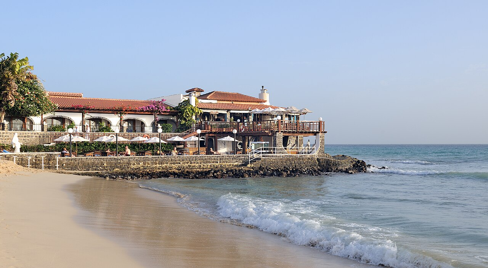
Playa de Santa Maria
La gran playa de arena blanca de la isla, con la zona hotelera y el pueblo detrás. Se recorre a pie.
Desde Porto · 31 ene – 7 feb 2027 · 4 adultos (2 parejas) · 2 habitaciones · coche
Las distancias y tiempos salen de OSRM / OpenStreetMap (consultado el 26/10/2026) y son orientativo. En las pistas de tierra (Buracona, Shark Bay, Serra Negra), OSRM calcula tiempos largos a propósito. Los atardeceres son de sunrise-sunset.org para Santa Maria, en hora local (UTC−1). Las fotos marcadas como orientativas son del entorno, no del punto exacto.
Llegada, coche y primer atardecer

La gran playa de arena blanca de la isla, con la zona hotelera y el pueblo detrás. Se recorre a pie.
Día tranquilo junto al hotel (≈ 5 km en coche)

El muelle del pueblo. Por la mañana se descarga y se limpia el atún y el wahoo; al atardecer es el punto de reunión.
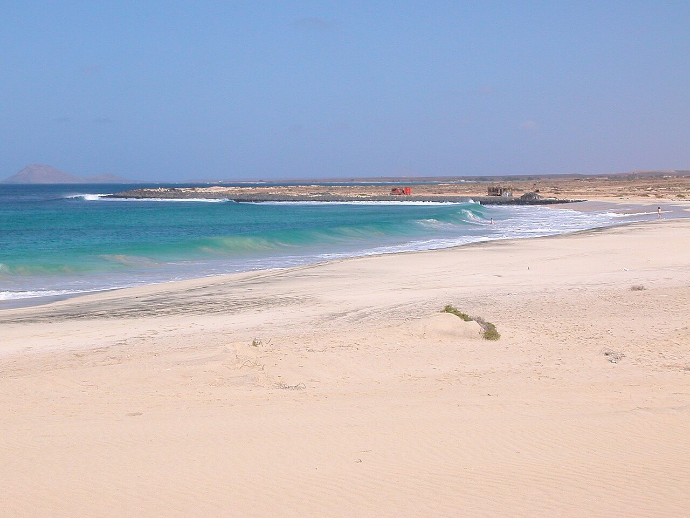
Arenal amplio y menos urbanizado que Santa Maria. Hay oleaje y corriente: es más para pasear y ver surf que para nadar.
≈ 62 km en coche
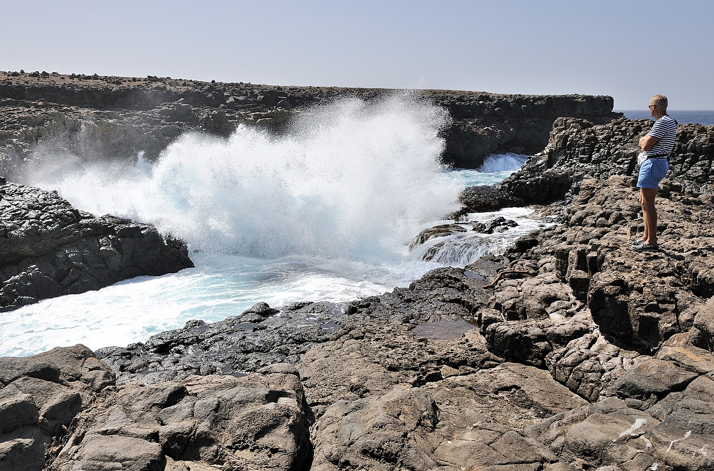
Costa de lava negra con una piscina natural. El «ojo azul» es una gruta donde la luz vuelve el agua de un azul intenso.
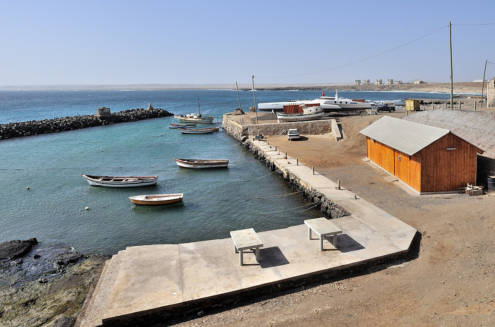
Es el puerto de pesca y de carga de la isla: un pueblo pequeño y tranquilo, sin hoteles grandes.
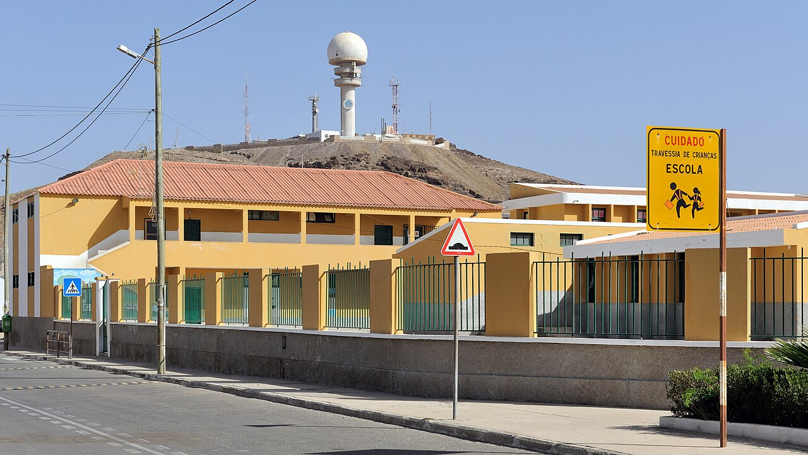
La capital de Sal, junto al aeropuerto. Tiene vida local, tiendas y bancos.
≈ 60 km en coche
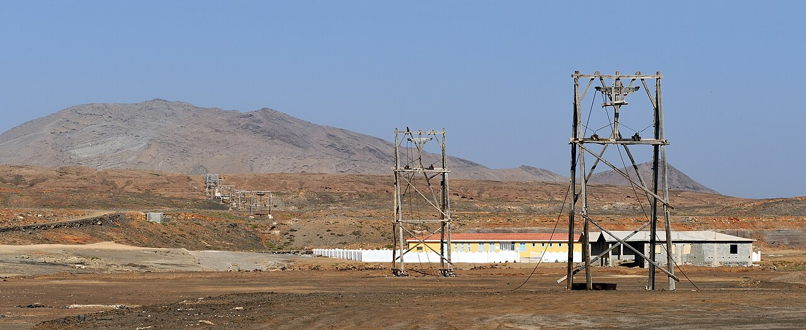
Las antiguas salinas y el teleférico abandonado del cráter. Bañarse en ellas es como flotar en el Mar Muerto.
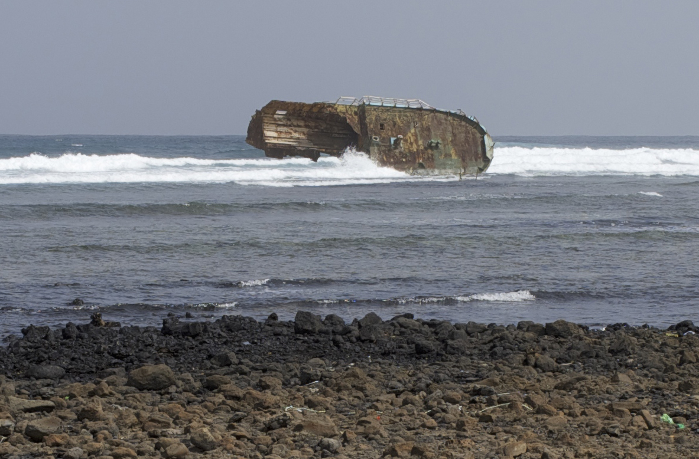
La bahía de los tiburones está en la costa este, cerca de Parda. Lleva protección solar y no toques a los animales.
≈ 25 km en coche
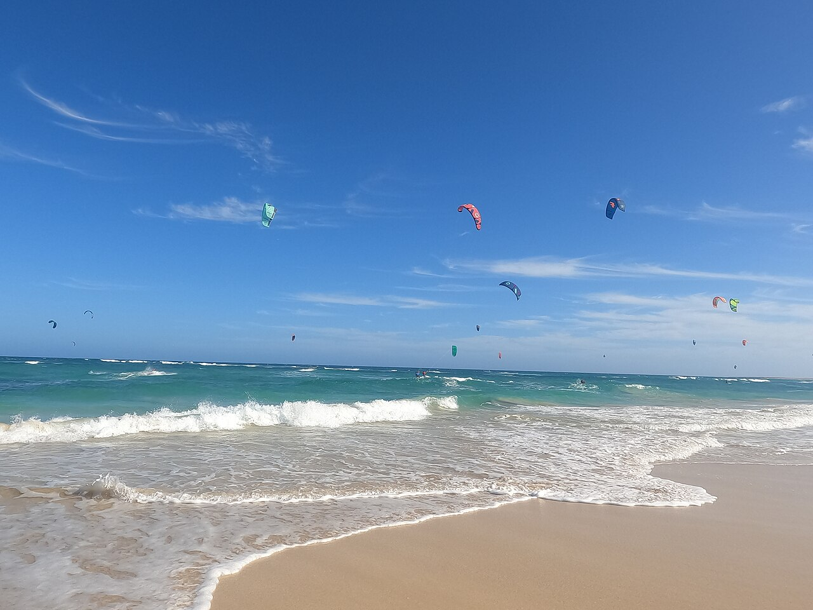
La playa del kitesurf, al este de Santa Maria: viento constante, arena larga y escuelas.
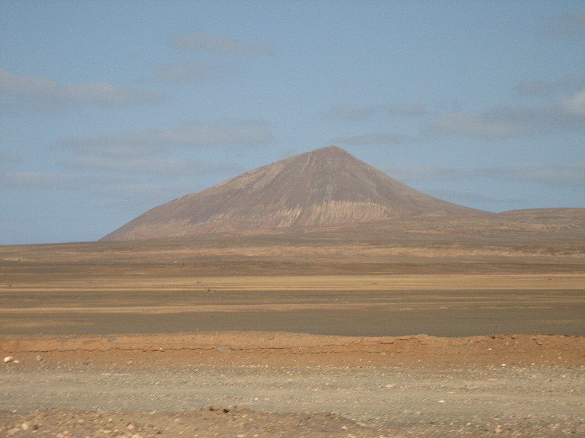
Las colinas volcánicas del sur, con vistas a la costa. La foto es del Monte Grande de Sal y sirve para hacerse una idea del paisaje; no es Serra Negra.
≈ 24 km en coche
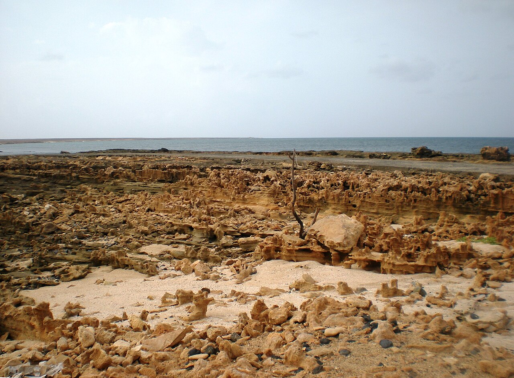
Una bahía tranquila en la costa oeste, con charcas de roca y un pequeño núcleo de casas.
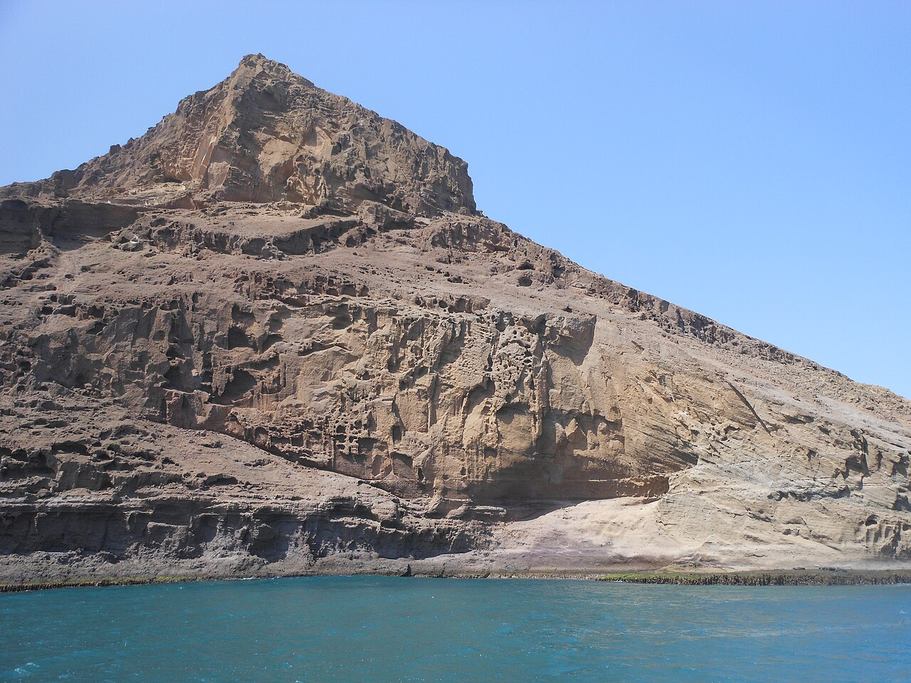
El cerro con forma de cabeza de león, junto a Murdeira.
Todo incluido y Santa Maria
Vuelta
| Fechas | Vuelo | Tarifa base para 4 (solo bolsa pequeña) | Tarifa para 4 con facturada + cabina grande cada uno | Con 2 facturadas + 2 cabinas grandes | Fuentes |
|---|---|---|---|---|---|
| Dom 31 ene → Dom 7 feb ★ mejor relación calidad-precio | easyJet directo · 13:25–17:00 / 17:40–23:00 | 558 € (Kayak) exacto 26/10/2026 | 1.120 € exacto 26/10/2026 | ≈ 839 € orientativo | Google Flights · Kayak · Kayak con maletas · momondo |
| Sáb 30 ene → Sáb 6 feb | easyJet directo · 13:20–16:55 / 17:35–22:55 | 710 € (GF) · 730 € (momondo) exacto 26/10/2026 | 1.222 € exacto 26/10/2026 | ≈ 966 € orientativo | Google Flights · Kayak con maleta · momondo |
| Lun 1 feb → Lun 8 feb | easyJet directo · 13:35–17:10 / 17:55–23:15 | 646 € (GF) exacto 26/10/2026 | 1.210 € exacto 26/10/2026 | ≈ 928 € orientativo | Google Flights · Kayak con maleta · momondo |
| Mar 2 feb → Mar 9 feb | Solo TAP con escala en Lisboa (no hay easyJet) | 1.169 € (GF) · 1.042 € TAP Discount (Kayak) exacto 26/10/2026 | TAP Básica (con facturada) 1.396 € exacto 26/10/2026 | ≈ 1.219 € orientativo | Google Flights · Kayak con maleta |
| Mié 3 feb → Mié 10 feb | easyJet directo (sin «Extra» por debajo de TAP) | 838 € (GF) · 832 € (Kayak) exacto 26/10/2026 | TAP Básica (con facturada) 1.396 € exacto 26/10/2026 | ≈ 1.219 € orientativo | Google Flights · Kayak con maleta · Kayak con cabina |
Cómo se calcula el equipaje: Kayak muestra la tarifa easyJet «Extra» como la más barata, tanto con el filtro de maleta facturada como con el de facturada + cabina grande, así que esa tarifa incluye ambas. Para 31/01 son 1.120 € para 4 (280 €/pers.), frente a 558 € (139,50 €/pers.) de la base, que solo lleva la bolsa pequeña de 45×36×20 cm. En cada pareja, un viajero va con «Extra» y el otro con la tarifa base: 2 × 280 + 2 × 139,50 = ≈ 839 €. Es más barato que poner la cabina grande y la facturada a los 4 viajeros: con el filtro de cabina, Kayak da 901 € (+85,75 €/pers.). El 2 y el 3 de febrero se han calculado con TAP: 2 billetes Discount (que incluyen cabina, según Kayak con el filtro de cabina) y 2 Básica (con facturada).
Fuentes consultadas el 26/10/2026: Google Flights (GF), Kayak y momondo. Skyscanner mostró un captcha y no se forzó, así que no hay precio de Skyscanner. La web de easyJet bloqueó la búsqueda automática (Access Denied). En su página oficial de tarifas consta que la bolsa pequeña de 45×36×20 es gratis, y que la cabina grande es de 56×45×25: añade las maletas online al reservar. Mezclar tarifas dentro de una misma reserva de easyJet está por confirmar; si no se puede, haz una reserva por pareja.
| Hotel | Booking: nota y total | Expedia: nota y total | Web oficial / turoperador | Enlaces | |
|---|---|---|---|---|---|
| Hotel Riu Funana ★ mejor relación calidad-precio 5★ (riu.com, Google y Expedia; Booking lo clasifica como 4★) | 8,3 (352 op.) 3.339 € exacto 26/10/2026 cancelación gratis | 8,8 (173 op.) 3.346 € exacto 26/10/2026 | 4,4/5 (5,7 mil op.) | riu.com: 239 €/noche por habitación → 3.346 €, «Todo incluido 24 h», cancelación gratis hasta el 29/01 (vía Google Hoteles) exacto 26/10/2026 · TUI.com: 234 €/noche → 3.276 € exacto 26/10/2026 | Booking · Expedia · riu.com · Google Hoteles |
| SOL by Meliá Dunas Family Fun más barato 4★ | 8,1 (104 op.) 2.536 € exacto 26/10/2026 | 7,0 (2 op.) 2.912 € exacto 26/10/2026 | 3,8/5 (100 op.) | Sin precio oficial ni de turoperador: consultar en el enlace. Está orientado a familias. | Booking · Expedia · Google Hoteles |
| Oásis Atlântico Belorizonte 4★ (Expedia 3,5★) | 8,1 (245 op.) 3.263 € exacto 26/10/2026 | 7,6 (49 op.) 3.270 € exacto 26/10/2026 | 4,2/5 (3,8 mil op.) | Web oficial vía Google Hoteles: 234 €/noche → 3.276 € (régimen no confirmado) · TUI.com: 230 €/noche exacto 26/10/2026 | Booking · Expedia · Google Hoteles |
| Hotel Riu Cabo Verde (solo adultos) 5★ | 8,1 (207 op.) 3.862 € exacto 26/10/2026 | 8,6 (99 op.) 3.870 € exacto 26/10/2026 | 4,5/5 (5,3 mil op.) | Sin precio oficial consultado: consultar en el enlace | Booking · Expedia · riu.com |
| Meliá Llana Beach Resort & Spa (solo adultos) 5★ | 8,2 (188 op.) 4.920 € exacto 26/10/2026 | 8,6 (178 op.) 4.444 € exacto 26/10/2026 | 4,4/5 (1,8 mil op.) | Google Hoteles: Atrápalo 275 €/noche por habitación (→ 3.850 €) exacto 26/10/2026 | Booking · Expedia · Google Hoteles |
| Hotel Riu Palace Santa Maria 5★ | 8,5 (177 op.) 4.547 € exacto 26/10/2026 | 9,2 (99 op.) 4.556 € exacto 26/10/2026 | 4,6/5 (4,2 mil op.) | riu.com: 325 €/noche → 4.550 € (vía Google Hoteles) exacto 26/10/2026 | Booking · Expedia · riu.com · Google Hoteles |
Por qué Riu Funana: es el 5★ con todo incluido más barato con nota alta: 8,3 en Booking con 352 opiniones, 8,8 en Expedia y 4,4 en Google con 5.700 opiniones. Cuesta lo mismo en Booking, Expedia y riu.com (≈ 3.340 €); TUI.com es algo más barato (3.276 €). Sol Dunas ahorra ≈ 800 €, pero tiene menos nota en Google (3,8) y en Expedia (7,0 con solo 2 opiniones) y está pensado para familias con niños.
Precios del 26/10/2026 para 2 habitaciones con 2 adultos cada una, 7 noches y todo incluido (filtro «Todo incluido» de Booking y Expedia). Los precios por noche de Google Hoteles son por habitación y se han multiplicado por 14. Booking avisó de que «el 97% de los alojamientos ya no están disponibles» para esas fechas: hay poca disponibilidad. El precio de Booking apenas cambiaba al salir el 30/01, el 01/02 o el 03/02 (consultado también el 26/10/2026). Otros con todo incluido descartados: Meliá Dunas (3.213 €, nota 7,6 en Booking), Royal Horizon (4.016 €), Meliá Tortuga (4.407 €), Oásis Salinas Sea (4.614 €) y ROBINSON (5.071 €). La tasa turística (ver checklist) se cobra aparte en el hotel.
| Empresa / fuente | Coche | Total 7 días | Condiciones | Enlace |
|---|---|---|---|---|
| Hertz (vía Trabber, datos de hertz.com) ★ mejor relación calidad-precio | Renault Duster · SUV compacto · 5 plazas · maletero de 475 L según la ficha de Renault | 434,05 € exacto 26/10/2026 | Recogida y devolución en el aeropuerto de Sal (SID), 31/01 a las 17:00 → 07/02 a las 15:00. Kilometraje ilimitado, seguro CDW, cancelación gratis, depósito lleno-lleno. | Trabber · hertz.cv |
| Hertz (vía Trabber) | Renault Oroch · pick-up · 5 plazas · 5 maletas según Trabber | 458,62 € exacto 26/10/2026 | Mismas condiciones. Si las maletas van en la caja abierta, hay riesgo de polvo y robo (supuesto). | Trabber |
| Hertz (vía Trabber) | Toyota Starlet · utilitario económico | 373,99 € exacto 26/10/2026 | Es el más barato, pero en un utilitario no caben 2 facturadas y 2 de cabina con 4 personas (supuesto). No cumple. | Trabber |
| No Limits Adventure | SUV compacto (Vitara, Duster o similar) | 420 € orientativo | 60 €/día × 7 según la tarifa de su web. Puede haber suplemento de entrega en el aeropuerto: hay que preguntar. | nolimitsadventure.com |
| Luz-Car | Renault Duster | 483 € orientativo | 69 €/día × 7 según la lista de precios. Recogida en Espargos o Santa Maria, no en el aeropuerto; la solicitud no garantiza la reserva. | luzcar.cv |
| Luz-Car | Toyota Rush (7 plazas) | 560 € orientativo | 80 €/día × 7. Con la 3.ª fila plegada debería tener más maletero (supuesto). | luzcar.cv |
Maletero: hay que meter 2 maletas facturadas y 2 trolleys de cabina (56×45×25 cm, ≈ 63 L cada uno, medida de easyJet). El Duster tiene 475 L (4x2; 400 L el 4x4) según la ficha de Renault. Con 2 facturadas medianas debería caber todo; las mochilas pequeñas van a los pies. Si las facturadas son grandes, coge el Toyota Rush de 7 plazas o el pick-up. Esto es un supuesto: no se ha medido.
Consultado el 26/10/2026. Kayak y Expedia no devolvieron ningún coche en SID para estas fechas («0 resultados» / «No hay coches disponibles»). La página de Kayak del aeropuerto da una media de 102 €/día para un económico orientativo. DiscoverCars devolvió un error 404. La gasolina no va incluida. La fianza de Hertz no se ha verificado: consultar en el enlace.
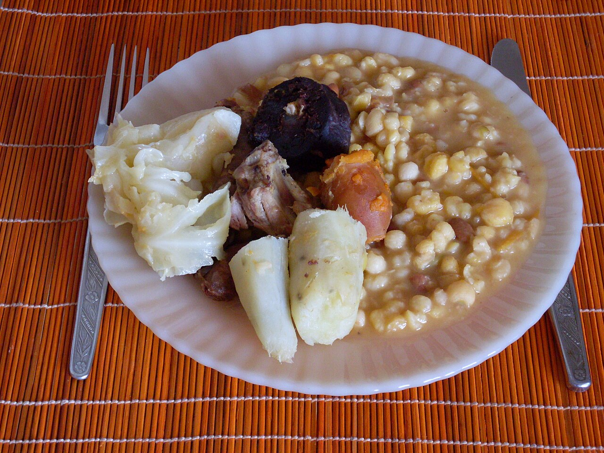
La cachupa es el plato nacional: un guiso de maíz y judías con pescado o carne. Prueba también el atún, el wahoo, el pulpo y la cerveza local Strela.
| Zona | Restaurante | Tipo | Fuente |
|---|---|---|---|
| Santa Maria | Café Criolo | Cocina caboverdiana. | Google Maps |
| Santa Maria | Cam's Restaurante e Cafetaria | Pescado y cocina local. | Tripadvisor |
| Santa Maria | Barracuda | Pescado y marisco. | Tripadvisor |
| Palmeira (día 3) | Gata Fish & Yacht Club | Pescado fresco junto al puerto. Nota 4,4/5 con 120 opiniones según el buscador (26/10/2026). | Tripadvisor |
| Palmeira (día 3) | Esplanada Rotterdam | Local, con pescado. Nota 4,0/5 según el buscador. | Tripadvisor |
Los precios de las cartas no están verificados: consultar en el enlace. Con todo incluido, comer fuera es un gasto extra que no está en el presupuesto.
Puedes marcar las casillas, pero no se guardan: es una página estática.
| Concepto | Total | Tipo |
|---|---|---|
| Vuelos easyJet 31/01–07/02 para 4, con 2 facturadas + 2 cabinas grandes | ≈ 839 € | orientativo |
| Hotel SOL by Meliá Dunas, 2 habitaciones × 7 noches, todo incluido (Booking) | 2.536 € | exacto 26/10/2026 |
| Coche Hertz Renault Duster, 7 días, aeropuerto | 434,05 € | exacto 26/10/2026 |
| TSA de entrada: 4 × 3.400 CVE | ≈ 123 € | exacto 26/10/2026 |
| Tasa turística: 4 pers. × 7 noches × 276 CVE | ≈ 70 € | orientativo |
| Gasolina, comidas fuera, entradas y excursiones | no incluido | consultar en el enlace |
| TOTAL | ≈ 4.002 € (≈ 2.001 € por pareja) | ✅ en el objetivo |
Cogiendo el SUV de No Limits (≈ 420 €) en lugar de Hertz, el total baja a ≈ 3.988 €. Pero el precio de No Limits es orientativo y la entrega en el aeropuerto no está confirmada.
| Concepto | Total | Tipo |
|---|---|---|
| Vuelos easyJet 31/01–07/02 para 4, con 2 facturadas + 2 cabinas grandes | ≈ 839 € | orientativo |
| Hotel Riu Funana, 2 habitaciones × 7 noches, todo incluido (Booking) | 3.339 € | exacto 26/10/2026 |
| Coche Hertz Renault Duster, 7 días, aeropuerto | 434,05 € | exacto 26/10/2026 |
| TSA de entrada: 4 × 3.400 CVE | ≈ 123 € | exacto 26/10/2026 |
| Tasa turística: 4 pers. × 7 noches × 276 CVE | ≈ 70 € | orientativo |
| Gasolina, comidas fuera, entradas y excursiones | no incluido | consultar en el enlace |
| TOTAL | ≈ 4.805 € (≈ 2.403 € por pareja) | ❌ 805 € por encima |
Con Oásis Belorizonte 4★ (3.263 €), el total es de ≈ 4.729 €. Con el Riu Funana comprado en TUI.com (3.276 €), es de ≈ 4.742 €.
Las cifras «exacto» son los precios mostrados el 26/10/2026; pueden cambiar en cualquier momento y no hay nada reservado. El total de vuelos es orientativo porque combina dos tarifas de Kayak (ver «Vuelos»). Los CVE están convertidos al cambio fijo de 110,265.